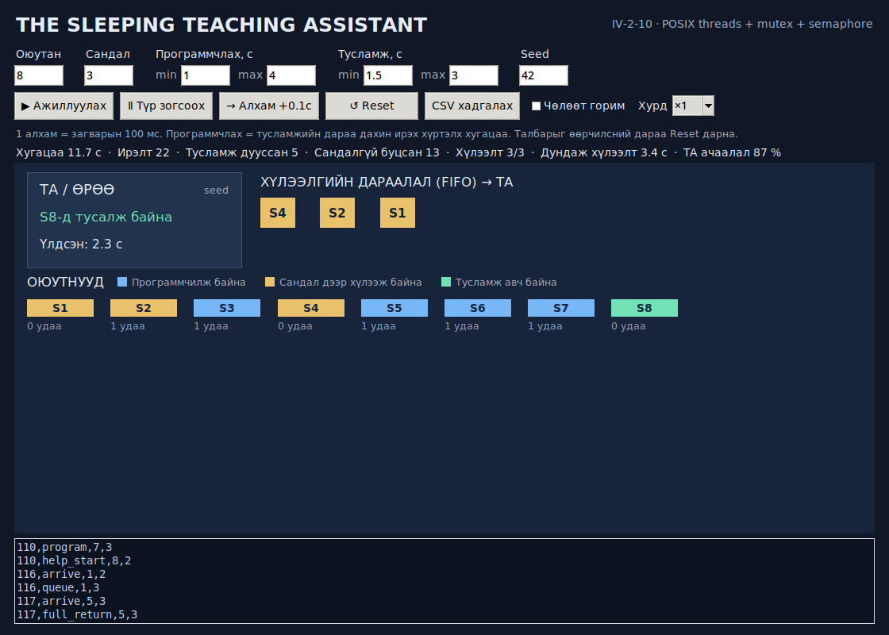
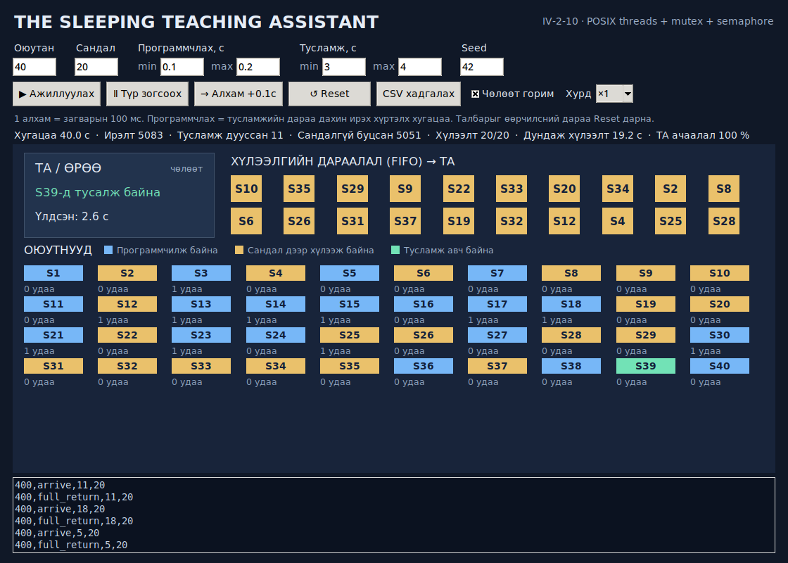
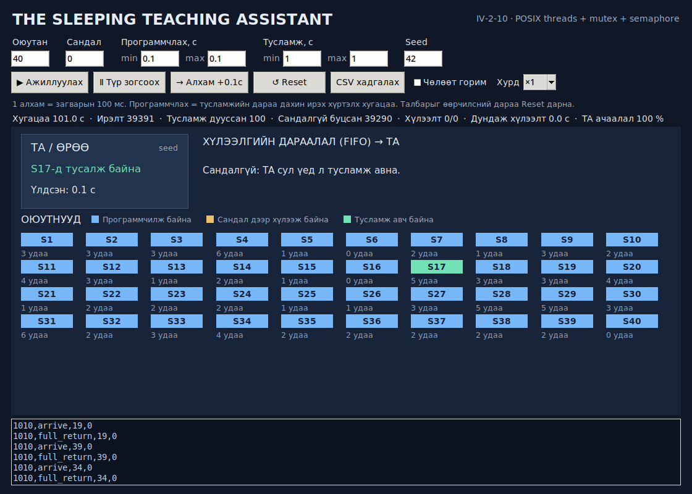

Асуудал
Нэг TA, хязгаартай тооны сандал, олон оюутан. Тусламж хүссэн оюутнууд зэрэг ирж нэг TA, сул сандлын төлөө өрсөлдөнө. Зохицуулалтгүй бол хоёр оюутан сүүлийн сандлыг зэрэг эзлэх (race condition), унтаж буй TA сэрэхгүй байх, зарим оюутан хэзээ ч тусламж авахгүй байх (starvation) эрсдэлтэй.
Шийдэл
Сул TA work semaphore дээр унтаж, анх ирсэн оюутан сэрээнэ. Сандал дээрх
оюутан called[i], тусламж авч буй оюутан done[i] дээр блоклогдоно;
дараалал ба тоолуурыг mutex хамгаална.
Туршилт ба дүрслэл
Оюутан, сандал, программчлах ба тусламжийн хугацаа, seed, горим, хурдыг (×1 / ×5 / ×20) сольж Ажиллуулах / Түр зогсоох / Алхам / Reset хийнэ. Өнгө: программчилж байна сандал дээр хүлээж байна тусламж авч байна.

Зураг 1. 8 оюутан, 3 сандал, 11.7 с: TA S8-д тусалж, S4, S2, S1 ирсэн дарааллаараа хүлээж байна.

Зураг 2. Чөлөөт горим, 40 оюутан, 20 сандал: сандал бүгд дүүрэн, TA-ийн ачаалал 100 %.

Зураг 3. Урт туршилт (40 оюутан, 0 сандал, 101 с): 37 оюутан тусламж авсан (v1.0-д 4).
Үр дүн
| Хэмжүүр | Өмнө | Дараа |
|---|---|---|
| Урт туршилтад тусламж авсан | 4 / 40 | 37 / 40 |
| Mutex lock өрсөлдөөн | 0.001 % | 19.9 %¹ |
| Mutex-гүй үед TSan race | илрээгүй | илэрсэн |
| Автомат горим, 20 с бодит цаг | 18.0 с | 19.9 с |
| Автомат тест (Python + C) | 18 + 1 | 26 + 2 |
¹ Чөлөөт горим (seed горимд 0.01 %). Stress: 15 000 tick, дүрэм зөрчил 0. Сандал 0 → 5: буцалт 65.9 % → 0 %, дундаж хүлээлт 0 → 4.95 с (6 оюутан, 5 seed).
Шүүмжийн дагуу сайжруулалт
- Тусламжийн хуваарилалт: оюутны дарааллыг tick бүр seed-тэй холино — 4 → 37 оюутан.
- Synchronization: оюутан semaphore дээр блоклогдоно; чөлөөт горим, stress тест, ThreadSanitizer.
- UI: тайлбар харагдана, 40 оюутан багтана, талбарын нэртэй алдаа, бодит цагтай автомат горим.
- Баримт: Final Report, Manual-ийг Markdown-оос үүсгэнэ; тоон туршилт; release tag.
Дүгнэлт
Номын шийдлийг бодит thread, mutex, semaphore-оор хэрэгжүүлж, mutex-ийн хэрэгцээг
ThreadSanitizer-аар нотолсон. Seed горим тайлбарлах, давтахад; чөлөөт горим бодит
өрсөлдөөнийг харуулахад тохиромжтой. Хязгаарлалт: sleep()-ийн оронд 100 мс-ийн
загварын цаг; WSL2-д туршаагүй.